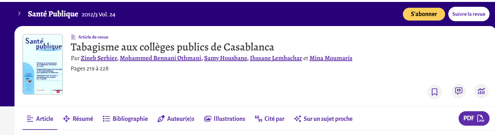
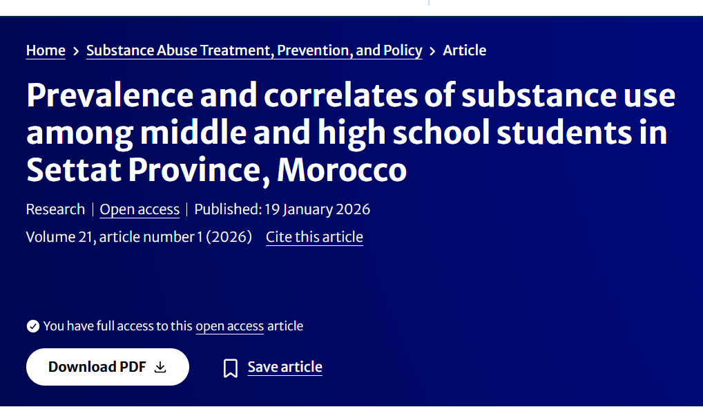
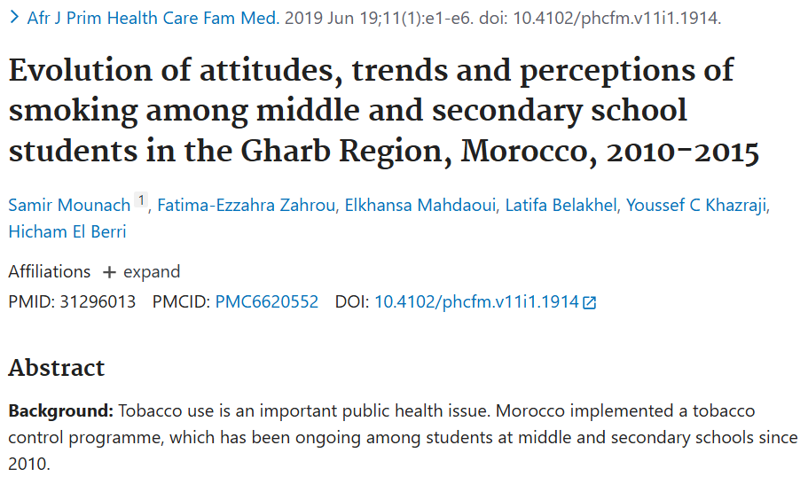
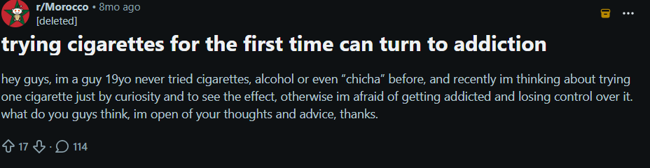
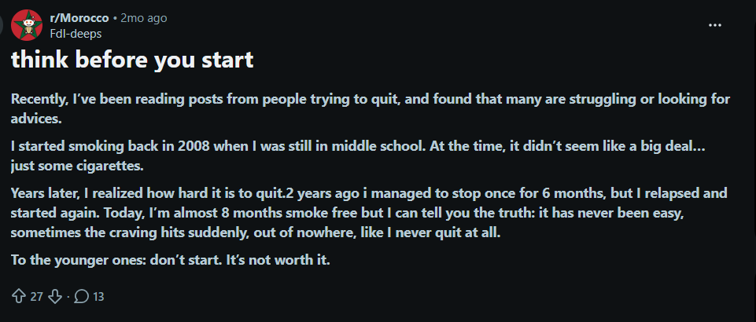

أسباب ودوافع هذه الظاهرة:

Tabagisme aux collèges publics de Casablanca
ملخص:
دراسة تُظهر انتشار التدخين بين تلاميذ الإعدادي في الدار البيضاء (7.5%) وارتباطه القوي بتعاطي المخدرات.
الفئة العمرية المستهدفة:
المراهقون (حوالي 11–18 سنة، متوسط 16 سنة)
الأسباب والدوافع:
- رفقة السوء
- مشاكل نفسية
- الرغبة في نسيان المشاكل
- مشاكل اجتماعية
- الشعور بالفراغ
- البحث عن الاسترخاء
- إثبات الرجولة
- الفضول والتجربة

Prevalence and correlates of substance use in Settat Province
ملخص:
دراسة تبيّن انتشار استهلاك المواد المخدرة بين تلاميذ سطات وعلاقته بعوامل اجتماعية ونفسية ومدرسية.
الفئة العمرية المستهدفة:
12–20 سنة (إعدادي وثانوي)
الأسباب والعوامل:
- ضغط الأقران (الأصدقاء)
- الرغبة في الاسترخاء والتكيف مع الضغط
- النزاعات العائلية وضعف الرقابة الأبوية
- الضغوط الدراسية
- سهولة الوصول إلى المواد
- العيش في بيئة حضرية أو داخلية

Evolution of attitudes and smoking trends in Gharb Region (2010–2015)
ملخص:
دراسة تقارن تطور التدخين بين التلاميذ، وتُظهر زيادة في التدخين رغم ارتفاع الوعي بأضراره.
الفئة العمرية المستهدفة:
10–20 سنة (إعدادي وثانوي)
الأسباب والعوامل:
- ضغط الأصدقاء
- تأثير الوالدين والأخوة المدخنين
- التدخين السلبي داخل المنزل
- أسباب نفسية (الاسترخاء والتوتر)
- عوامل اجتماعية واقتصادية
صور إضافية (لقطات من Reddit)


الصفحة التالية:
https://anouard11.github.io/school-last/